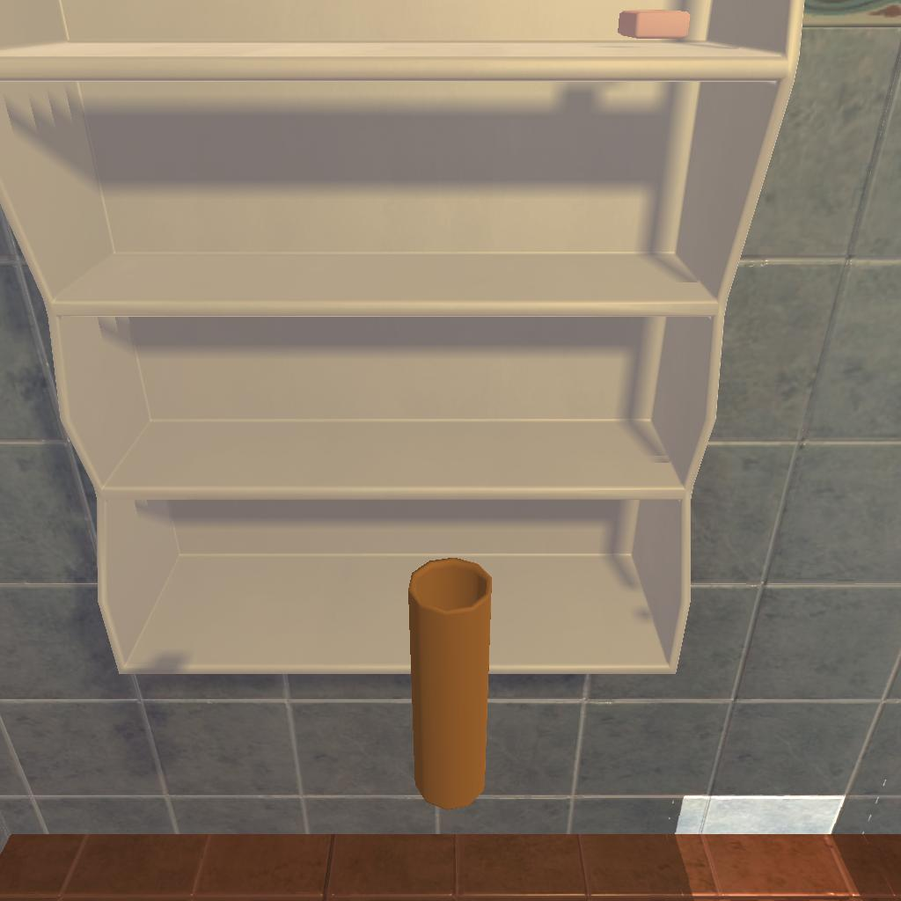

---------------------------------------------------------task: 25---------------------------------------------------------
--------------------------------------------------------------------------------------------------------------------------------------------------------------------
--------------------------------------------------------------------------------------------------------------------------------------------------------------------
Step:--------------------------------------------------------------------------18-------------------------------------------------------------------------------
----------------------------------------
VLM Prompt:
**Task**
Please perform as an embodied AI agent. Our final objective is to find two dishsponge and put them in cart. Below is the plan for completing the task, the current observation, alongside historical data and admissible actions for the next step. Please determine the best action for the next step!
**Plan**
Below is a detailed step-by-step plan to complete the task.
1. Find a dish sponge.
2. Pick up the dish sponge.
3. Locate a cart.
4. Place the picked-up dish sponge in the cart.
5. Find another dish sponge.
6. Pick up the second dish sponge.
7. Return to the previously located cart.
8. Place the second picked-up dish sponge in the cart with the first one.
**Current Observation**
Displayed is an image capturing the current position of the agent.
**History Information**
Displayed are the previous observations with their corresponding actions.
Current State 1:
1. Place: Bathroom
2. Step Index in Plan: 1
3. Objects: Dish sponge, sink, shelves
4. Action: Go to shelf 4
Current State 2:
1. Place: Bathroom
2. Step Index in Plan: 1
3. Objects: Paper towel roll, toilet paper, soap bar
4. Action: go to shelf 1
Current State 3:
1. Place: Shelf 4 in the bathroom
2. Step Index in Plan: 1
3. Objects: Dish sponge
4. Action: Go to shelf 2
Current State 4:
1. Place: Shelf 1, 2, or 4 (exact shelf not specified in context)
2. Step Index in Plan: 1
3. Objects: Dish sponge
4. Action: Go to shelf 3
Current State 5:
1. Place: Shelf 3
2. Step Index in Plan: Step 2
3. Objects: Dish Sponge
4. Action: Take papertowelroll 1 from shelf 3
Current State 6:
1. Place: Bathroom
2. Step Index in Plan: 2
3. Objects: Paper towel roll, dish sponge, shelf 3
4. Action: Go to cart 1
Current State 7:
1. Place: Near a cart
2. Step Index in Plan: Step 3
3. Objects: Paper towel roll, cart
4. Action: Put paper towel roll 1 in/on cart 1
Current State 8:
1. Place: Near a cart
2. Step Index in Plan: 3
3. Objects: Paper towel roll, cloth
4. Action: Go to shelf 4
Current State 9:
1. Place: Shelf 3 in the bathroom
2. Step Index in Plan: 2
3. Objects: Dish Sponge
4. Action: go to shelf 1
Current State 10:
1. Place: Shelf 3
2. Step Index in Plan: Step 2
3. Objects: Dish sponge
4. Action: Go to shelf 2
Current State 11:
1. Place: Bathroom
2. Step Index in Plan: 2
3. Objects: Dish sponge
4. Action: Go to shelf 3
Current State 12:
1. Place: Shelf with a dish sponge
2. Step Index in Plan: 2
3. Objects: Dish sponge
4. Action: Take dish sponge 1 from shelf 3
Current State 13:
1. Place: Bathroom, Shelf 3
2. Step Index in Plan: 2
3. Objects: Pink dish sponge
4. Action: Examine toiletpaper 1
Current State 14:
1. Place: Facing a shelf
2. Step Index in Plan: 3
3. Objects: Dish sponge
4. Action: Go to cart 1
Current State 15:
1. Place: Near a cart
2. Step Index in Plan: 3
3. Objects: Paper towel roll, Cloth
4. Action: Go to shelf 3
Current State 16:
1. Place: Near a cart
2. Step Index in Plan: 4
3. Objects: Cart, dish sponge
4. Action: Go to shelf 4
Current State 17:
1. Place: Facing a shelf without a visible dish sponge
2. Step Index in Plan: 5
3. Objects: Dish sponge, cart, shelf 3
4. Action: Go to shelf 3
Current State 18:
1. Place: Shelf 3 in the bathroom
2. Step Index in Plan: 5
3. Objects: Pink dish sponge
4. Action: Go to shelf 1
**Admissible Actions**
(1): go to bathtub 1
(2): go to bathtubbasin 1
(3): go to cart 1
(4): go to toilet 1
(5): go to garbagecan 1
(6): go to toiletpaperhanger 1
(7): go to shelf 1
(8): go to shelf 2
(9): go to sink 1
(10): go to sinkbasin 1
(11): go to handtowelholder 1
(12): put toiletpaper 1 in/on shelf 3
(13): examine toiletpaper 1
**Analysis Guideline**
1. Analyze the **History Information** and determine our current step in the plan and our current place.
2. List all visible objects related to the task in the current observation.
3. Analyze the objects in the current observation based on the history and the requirements for the current step, and then determine if we can complete the step with the current observation.
4. Analyze and decide on the most appropriate action to take.
5. Summarize the analysis using the following format: "Analysis: [The summarization of the analysis], The Most Appropriate Action: (i which is the integer.): [Selected action]"
**Notes**
1. We must complete each step of the plan in order and cannot skip steps when the previous ones are not finished.
2. For "Go to" actions listed as "go to xxx [n]", interpret this as there are n distinct actions available: "go to xxx 1", "go to xxx 2", ..., "go to xxx n". Select one specific action from these options instead of using "go to xxx [n]".
3. If receptacles such as drawers, cabinets, and so forth are closed in the current observation, we may try to open them.
4. Pay attention to synonyms and ensure clarity in the terms used.
5. If there is no history available, we are at the first step and the current place is "Unknown".
6. The most appropriate action must be in the **Admissible Actions**, and we cannot generate a new action that is not in the **Admissible Actions**.
**Answer**
Please select the most suitable action by following the **Analysis Guideline**, keeping the above **Notes** in mind.
----------------------------------------
----------------------------------------
VLM Response:
Analysis: According to the History Information, the last action taken was "Go to shelf 3" while looking for a second dish sponge, which aligns with step 5 of the plan. The Current Observation shows a shelf with a pink dish sponge on it, which means we have successfully located the second dish sponge needed for the task. The best course of action now is to pick up this dish sponge to proceed to step 6 of the plan. However, there is no "pick up dish sponge" action available in the Admissible Actions. The closest action related to our current objective is "go to shelf 3", which is the shelf we are currently observing with the dish sponge. It is possible that by selecting this action, the agent will then be close enough to perform the pick-up action in the next step.
The Most Appropriate Action: (7): go to shelf 3
----------------------------------------
----------------------------------------
>>> Refine VLM Response and Get Pure Action: go to shelf 3
----------------------------------------
-----------------------------------------------------------------
Running time: 53.61637210845947 seconds
Total Money: 12.868489999999989
-----------------------------------------------------------------
-----------------------------------------------------------------
Summarization Prompt:
**Context**
Analysis: According to the History Information, the last action taken was "Go to shelf 3" while looking for a second dish sponge, which aligns with step 5 of the plan. The Current Observation shows a shelf with a pink dish sponge on it, which means we have successfully located the second dish sponge needed for the task. The best course of action now is to pick up this dish sponge to proceed to step 6 of the plan. However, there is no "pick up dish sponge" action available in the Admissible Actions. The closest action related to our current objective is "go to shelf 3", which is the shelf we are currently observing with the dish sponge. It is possible that by selecting this action, the agent will then be close enough to perform the pick-up action in the next step.
The Most Appropriate Action: (7): go to shelf 3
**Summary Format**
1. Place: [Specify the current location]
2. Step Index in Plan: [Dispkay the current step number in the plan before taking the current action]
3. Objects: [List the objects relevant to the task]
4. Action: [Describe the most appropriate action without the "(x)" and keep the integer of the object]
Please analyze the **Context** and summarize the analysis using the **Summary Format**.
-----------------------------------------------------------------
-----------------------------------------------------------------
Summarization Response:
1. Place: shelf 3
2. Step Index in Plan: 5
3. Objects: pink dish sponge
4. Action: go to shelf 3
-----------------------------------------------------------------
-----------------------------------------------------------------
Text Observation:Nothing happens.
-----------------------------------------------------------------
UNSUCCEED